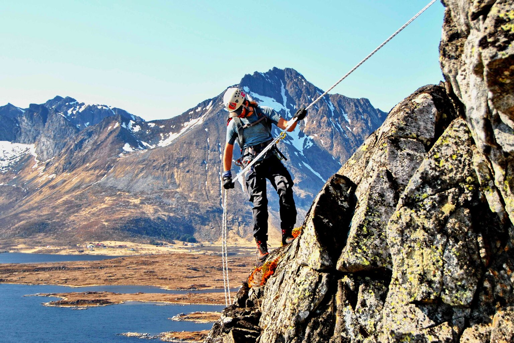
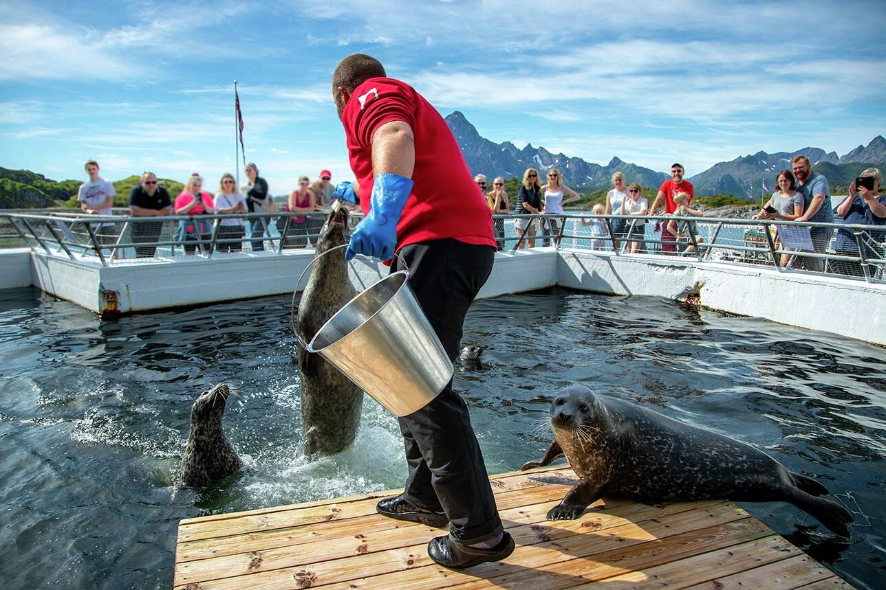
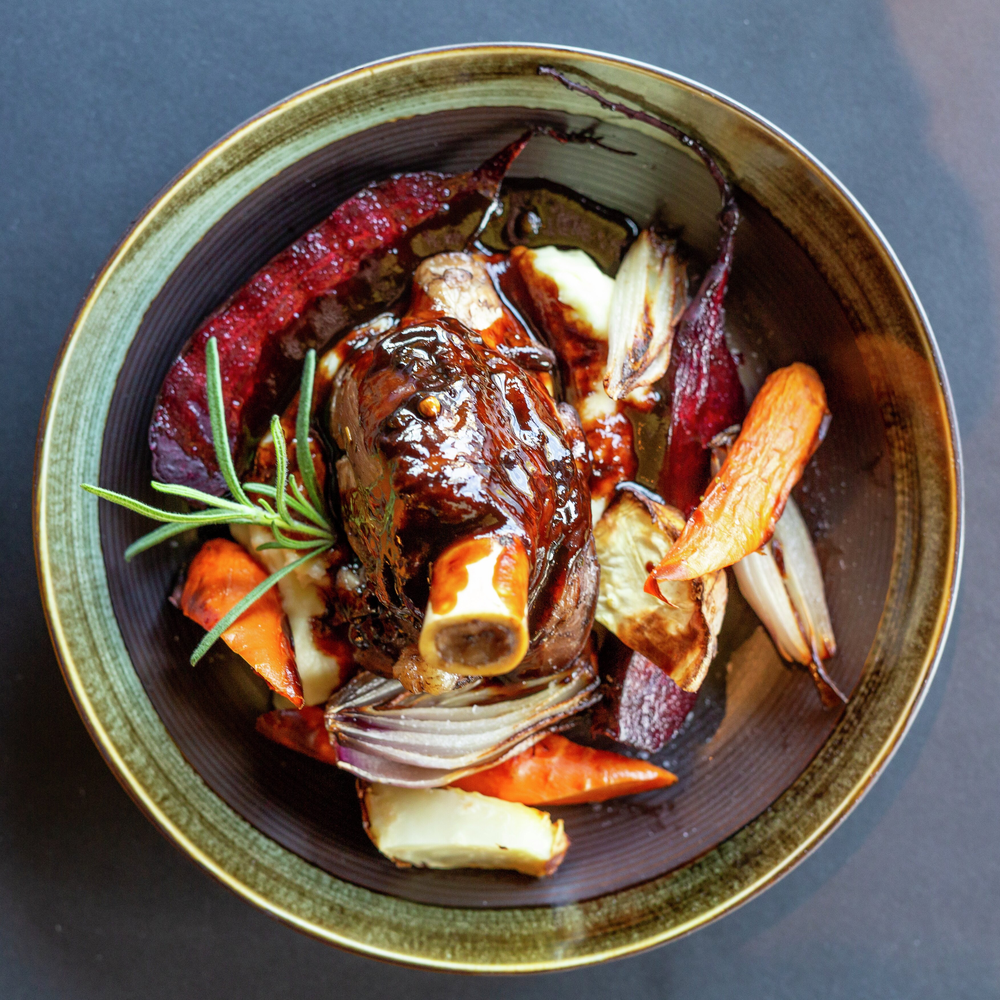

Activities and experiences
The Lofoten Islands are connected like pearls on a string with plenty of things to do, see and explore. We have 4 seasons in Norway, generally speaking. And in Lofoten, the contrasts between the seasons make for some truly unique experiences, all year round.
Atractions
In Lofoten you will find several different nature attractions, galleries, churches and museums. You can visit the Lofotr Viking Museum, the Lofoten Aquarium or stop at one of the many sculptures of Skulpturlandskap Nordland.
Food experience
Lofoten is high on the list for many when it comes to seafood experiences. It´s natural given the geographical location. However, there´s plenty of land-based food and beverage to be explored as well. With many established eateries, Lofoten offers a wide variety of exceptional food experiences.